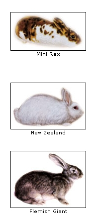

If you keep your rabbits outdoors, locate their hutches in a protected site. The hutch should have a roof with a generous overhang to help protect the animals from inclement weather and adequate flooring to protect their feet.